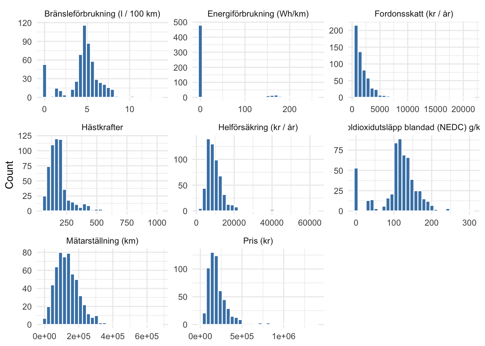
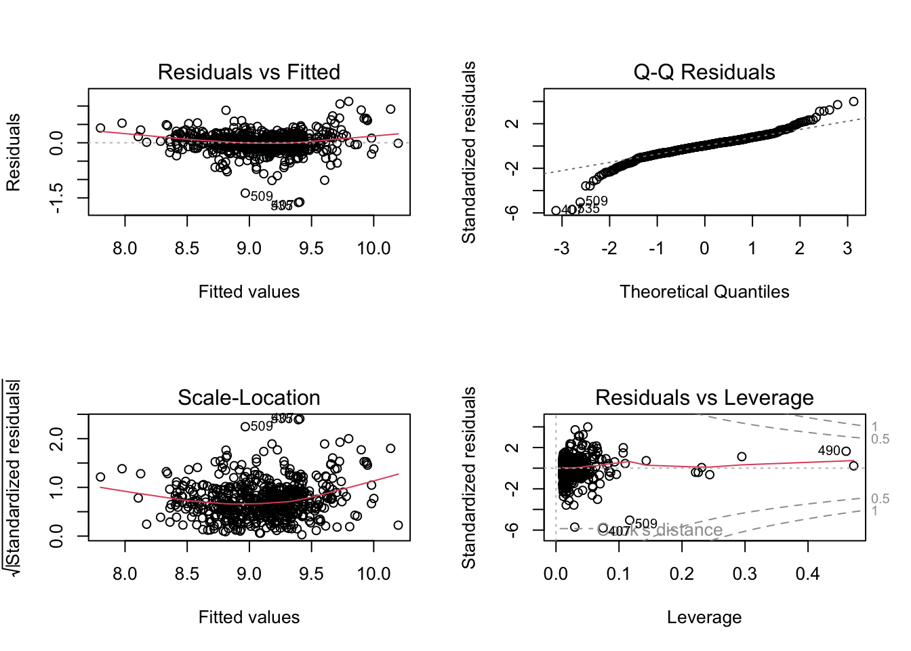
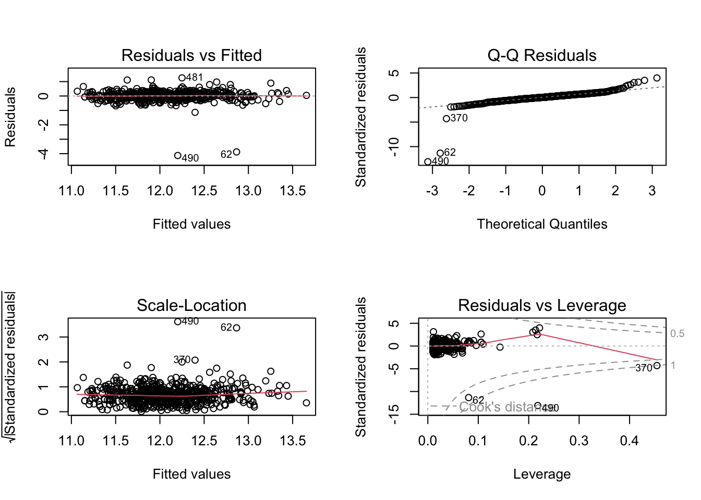
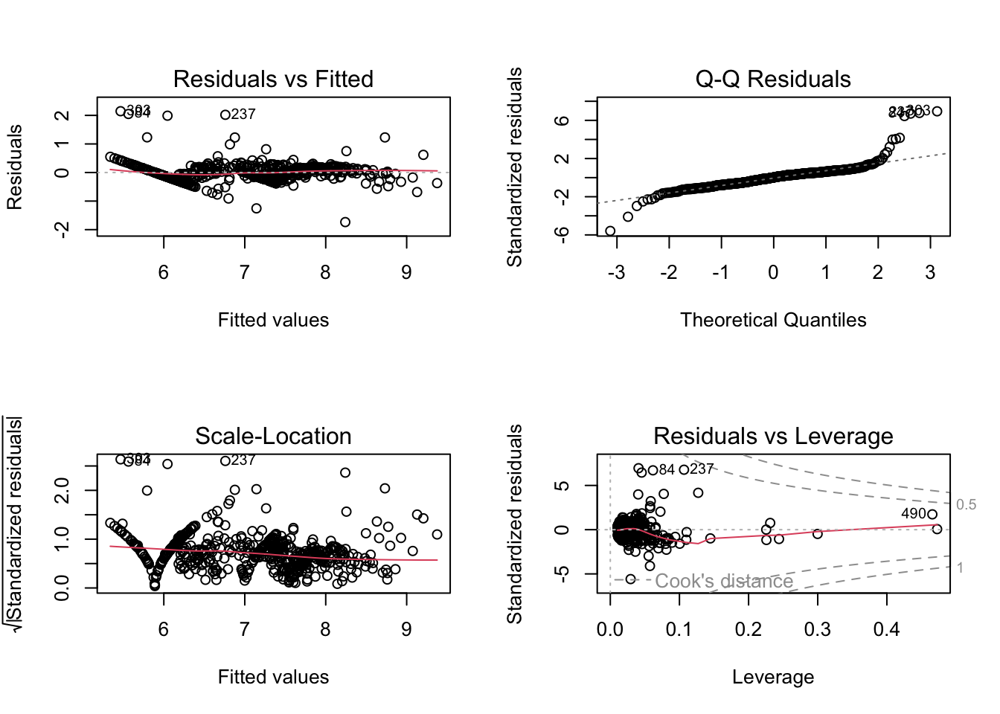
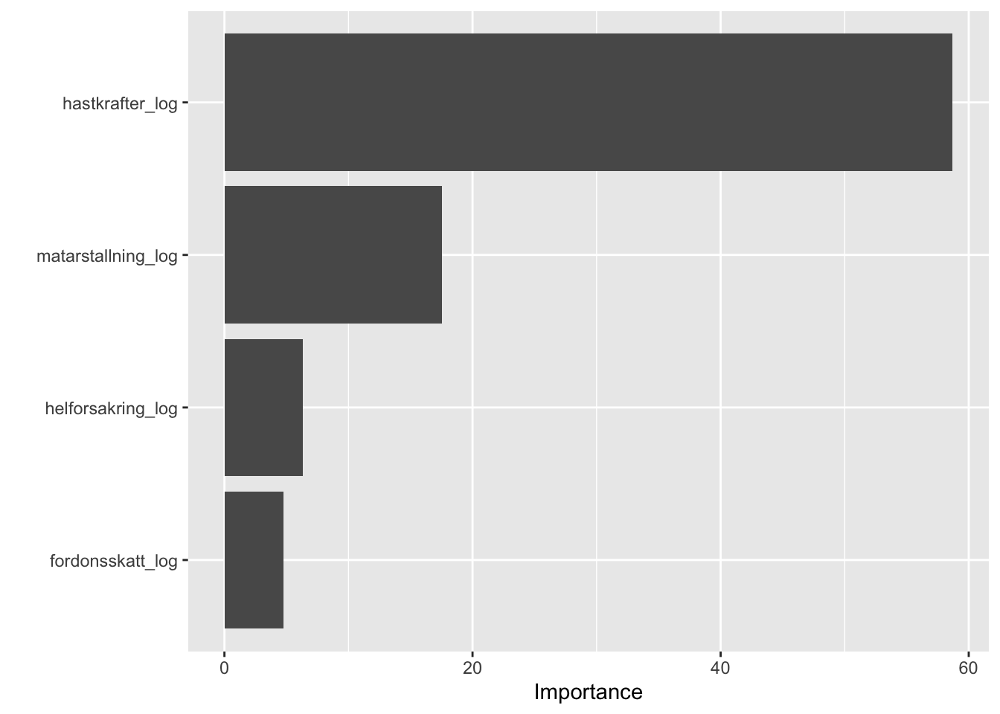

packages <- c(
"tidyverse", "readxl", "fastDummies", "corrplot",
"rsample", "GGally", "ggcorrplot", "car", "xgboost", "yardstick", "tibble", "ranger", "glmnet", "vip"
)
idx <- packages %in% rownames(installed.packages())
if (any(!idx)) install.packages(packages[!idx])
suppressPackageStartupMessages(
invisible(lapply(packages, library, character.only = TRUE))
)Blocket Car Analysis
Introduction
In this project, we analyze web-scraped used car listings from Blocket, enriched with technical specifications from Transportstyrelsen and cost estimates for insurance and taxation in Sweden. The primary goal has shifted from estimating total yearly ownership cost to two main objectives: (1) Predicting market prices for used cars in Sweden, with a focus on non-premium, mid-range vehicles, and (2) Gaining statistical insight into what factors influence insurance premiums and vehicle taxes, using linear regression models.
By combining predictive modeling (e.g., random forest) with inference-driven approaches (e.g., linear regression), we aim to both improve price prediction accuracy and interpret underlying patterns in insurance and tax structures in the Swedish car market.
# Read the data (adjust file name/path if needed) -------------------------
cars_raw <- read_excel("dataset_final.xlsx")
# 1. Convert character columns that look numeric into numeric --------------
cars_clean <- cars_raw %>%
mutate(across(
where(is.character),
~ ifelse(
grepl("^[0-9.,]+$", .x),
suppressWarnings(as.numeric(gsub(",", "", .x))),
.x
)
)) %>%
# 2. Convert energy consumption to numeric and replace NAs with 0 --------
mutate(`Energiförbrukning (Wh/km)` = replace_na(as.numeric(`Energiförbrukning (Wh/km)`), 0)) %>%
# 3. Convert Modellår to factor ------------------------------------------
mutate(Modellår = factor(Modellår)) %>%
# 4. Remove Biltyp completely --------------------------------------------
select(-Biltyp)
glimpse(cars_clean)Rows: 567
Columns: 15
$ Annons <chr> "Volkswagen", "Ford Kuga 2.0 TD…
$ Fordonsbenämning <chr> "VOLKSWAGEN T-ROC", "FORD KUGA"…
$ Handelsbeteckning <chr> "T-ROC", "KUGA", "A3 SPORTBACK"…
$ Registreringsnummer <chr> "TNG159", "GJD48X", "LRO335", "…
$ `Fordonsskatt (kr / år)` <dbl> 536, 3886, 360, 1103, 3084, 308…
$ Bränsle <chr> "Miljöbränsle/Hybrid", "Diesel"…
$ `Helförsäkring (kr / år)` <dbl> 3264, 4140, 3984, 3528, 4164, 8…
$ Hästkrafter <dbl> 111, 150, 116, 100, 170, 392, 1…
$ `Mätarställning (km)` <dbl> 90000, 137420, 52000, 248215, 3…
$ Modellår <fct> 2018, 2019, 2017, 2016, 2015, 2…
$ `Bränsleförbrukning (l / 100 km)` <dbl> 5.2, 6.1, 4.7, 4.2, 5.7, 1.7, 5…
$ `Koldioxidutsläpp blandad (NEDC) g/km` <dbl> 119, 161, 107, 109, 149, 51, 14…
$ `Energiförbrukning (Wh/km)` <dbl> 0, 0, 0, 0, 0, 149, 0, 160, 0, …
$ `Pris (kr)` <dbl> 135000, 160000, 154000, 50000, …
$ Url <chr> "https://www.blocket.se/annons/…#Distribution inspection
# Visualise distributions of all numeric variables -----------------------
numeric_vars <- cars_clean %>%
select(where(is.numeric)) %>%
select(where(~ n_distinct(.) > 2)) %>%
pivot_longer(everything(), names_to = "Variable", values_to = "Value")
ggplot(numeric_vars, aes(Value)) +
geom_histogram(bins = 30, fill = "steelblue", color = "white") +
facet_wrap(~ Variable, scales = "free") +
theme_minimal() +
labs(x = NULL, y = "Count")
# Final modelling dataset -------------------------------------------------
cars_clean_inf <- cars_clean %>%
mutate(
Helförsäkring_log = log(`Helförsäkring (kr / år)`),
Hästkrafter_log = log(Hästkrafter + 1),
Pris_log = log(`Pris (kr)`),
Skatt_log = log(`Fordonsskatt (kr / år)` + 1),
Mätar_log = log(`Mätarställning (km)` + 1),
Bränsleförb_log = log(`Bränsleförbrukning (l / 100 km)` + 1)
) %>%
select(
Helförsäkring_log, Hästkrafter_log, Modellår, Mätar_log,
Bränsleförb_log, Bränsle, Pris_log, Skatt_log, `Koldioxidutsläpp blandad (NEDC) g/km`
)
glimpse(cars_clean_inf)Rows: 567
Columns: 9
$ Helförsäkring_log <dbl> 8.090709, 8.328451, 8.290042, 8…
$ Hästkrafter_log <dbl> 4.718499, 5.017280, 4.762174, 4…
$ Modellår <fct> 2018, 2019, 2017, 2016, 2015, 2…
$ Mätar_log <dbl> 11.40758, 11.83080, 10.85902, 1…
$ Bränsleförb_log <dbl> 1.8245493, 1.9600948, 1.7404662…
$ Bränsle <chr> "Miljöbränsle/Hybrid", "Diesel"…
$ Pris_log <dbl> 11.81303, 11.98293, 11.94471, 1…
$ Skatt_log <dbl> 6.285998, 8.265393, 5.888878, 7…
$ `Koldioxidutsläpp blandad (NEDC) g/km` <dbl> 119, 161, 107, 109, 149, 51, 14…Correlation inspection
cars_clean_inf %>%
select(where(is.numeric)) %>%
summarise(across(everything(), ~ cor(.x, cars_clean_inf$Helförsäkring_log, use = "complete.obs"))) %>%
pivot_longer(everything(), names_to = "Variable", values_to = "Correlation") %>%
arrange(desc(abs(Correlation)))# A tibble: 7 × 2
Variable Correlation
<chr> <dbl>
1 Helförsäkring_log 1
2 Hästkrafter_log 0.641
3 Pris_log 0.491
4 Skatt_log 0.328
5 Koldioxidutsläpp blandad (NEDC) g/km 0.177
6 Mätar_log 0.175
7 Bränsleförb_log 0.0522Statistical Inference
#| message: false
#| warning: false
model_f <- lm(Helförsäkring_log ~ ., data = cars_clean_inf%>%select(-Bränsleförb_log, -Skatt_log, -`Koldioxidutsläpp blandad (NEDC) g/km`))
summary(model_f)
Call:
lm(formula = Helförsäkring_log ~ ., data = cars_clean_inf %>%
select(-Bränsleförb_log, -Skatt_log, -`Koldioxidutsläpp blandad (NEDC) g/km`))
Residuals:
Min 1Q Median 3Q Max
-1.62613 -0.13991 0.01238 0.14633 1.12691
Coefficients:
Estimate Std. Error t value Pr(>|t|)
(Intercept) 4.425059 0.355816 12.436 < 2e-16 ***
Hästkrafter_log 0.673330 0.043156 15.602 < 2e-16 ***
Modellår2016 0.130499 0.040766 3.201 0.001448 **
Modellår2017 0.084723 0.042999 1.970 0.049300 *
Modellår2018 0.175707 0.045889 3.829 0.000143 ***
Modellår2019 0.189512 0.051514 3.679 0.000257 ***
Modellår2020 0.122110 0.057830 2.112 0.035176 *
Modellår2021 0.105902 0.067657 1.565 0.118090
Modellår2022 -0.320774 0.080153 -4.002 7.14e-05 ***
Modellår2023 -0.767089 0.101016 -7.594 1.34e-13 ***
Modellår2024 -0.666266 0.144128 -4.623 4.72e-06 ***
Mätar_log -0.002024 0.016187 -0.125 0.900519
BränsleDiesel 0.191398 0.030503 6.275 7.09e-10 ***
BränsleEl 0.148035 0.052617 2.813 0.005076 **
BränsleMiljöbränsle/Hybrid -0.039388 0.047873 -0.823 0.411004
Pris_log 0.088860 0.034501 2.576 0.010267 *
---
Signif. codes: 0 '***' 0.001 '**' 0.01 '*' 0.05 '.' 0.1 ' ' 1
Residual standard error: 0.2893 on 551 degrees of freedom
Multiple R-squared: 0.6089, Adjusted R-squared: 0.5982
F-statistic: 57.19 on 15 and 551 DF, p-value: < 2.2e-16confint(model_f) 2.5 % 97.5 %
(Intercept) 3.7261375286 5.12398106
Hästkrafter_log 0.5885590978 0.75810107
Modellår2016 0.0504226542 0.21057577
Modellår2017 0.0002605098 0.16918554
Modellår2018 0.0855680936 0.26584602
Modellår2019 0.0883236695 0.29070109
Modellår2020 0.0085155506 0.23570527
Modellår2021 -0.0269944559 0.23879814
Modellår2022 -0.4782159558 -0.16333214
Modellår2023 -0.9655113110 -0.56866605
Modellår2024 -0.9493729123 -0.38315816
Mätar_log -0.0338211684 0.02977225
BränsleDiesel 0.1314817013 0.25131371
BränsleEl 0.0446815413 0.25138920
BränsleMiljöbränsle/Hybrid -0.1334234613 0.05464811
Pris_log 0.0210903071 0.15662998# Diagnostics -------------------------------------------------------------
par(mfrow = c(2, 2))
plot(model_f)
par(mfrow = c(1, 1))
vif(model_f) GVIF Df GVIF^(1/(2*Df))
Hästkrafter_log 2.297543 1 1.515765
Modellår 2.771852 9 1.058275
Mätar_log 1.371131 1 1.170953
Bränsle 1.945106 3 1.117268
Pris_log 2.612827 1 1.616424model_p <- lm(Pris_log ~ ., data = cars_clean_inf %>% select(-Helförsäkring_log, -Skatt_log, -Bränsleförb_log, -`Koldioxidutsläpp blandad (NEDC) g/km`))
summary(model_p)
Call:
lm(formula = Pris_log ~ ., data = cars_clean_inf %>% select(-Helförsäkring_log,
-Skatt_log, -Bränsleförb_log, -`Koldioxidutsläpp blandad (NEDC) g/km`))
Residuals:
Min 1Q Median 3Q Max
-4.1289 -0.1412 0.0117 0.1672 1.2578
Coefficients:
Estimate Std. Error t value Pr(>|t|)
(Intercept) 7.97794 0.27817 28.680 < 2e-16 ***
Hästkrafter_log 0.85867 0.03871 22.180 < 2e-16 ***
Modellår2016 0.17899 0.04971 3.601 0.000346 ***
Modellår2017 0.29481 0.05154 5.720 1.75e-08 ***
Modellår2018 0.42122 0.05370 7.844 2.27e-14 ***
Modellår2019 0.52904 0.05943 8.902 < 2e-16 ***
Modellår2020 0.58078 0.06692 8.678 < 2e-16 ***
Modellår2021 0.62544 0.07911 7.906 1.45e-14 ***
Modellår2022 0.80881 0.09269 8.726 < 2e-16 ***
Modellår2023 0.55309 0.12238 4.520 7.58e-06 ***
Modellår2024 -0.00749 0.17780 -0.042 0.966413
Mätar_log -0.05252 0.01984 -2.647 0.008359 **
BränsleDiesel 0.03504 0.03760 0.932 0.351811
BränsleEl -0.25781 0.06398 -4.030 6.37e-05 ***
BränsleMiljöbränsle/Hybrid -0.09491 0.05892 -1.611 0.107791
---
Signif. codes: 0 '***' 0.001 '**' 0.01 '*' 0.05 '.' 0.1 ' ' 1
Residual standard error: 0.3569 on 552 degrees of freedom
Multiple R-squared: 0.6173, Adjusted R-squared: 0.6076
F-statistic: 63.59 on 14 and 552 DF, p-value: < 2.2e-16confint(model_p) 2.5 % 97.5 %
(Intercept) 7.43153296 8.52434776
Hästkrafter_log 0.78262906 0.93472049
Modellår2016 0.08134198 0.27663646
Modellår2017 0.19356705 0.39604896
Modellår2018 0.31574592 0.52670025
Modellår2019 0.41230182 0.64576999
Modellår2020 0.44932546 0.71223827
Modellår2021 0.47005000 0.78082332
Modellår2022 0.62673511 0.99089234
Modellår2023 0.31271333 0.79347083
Modellår2024 -0.35674788 0.34176737
Mätar_log -0.09150270 -0.01354318
BränsleDiesel -0.03881892 0.10889687
BränsleEl -0.38348139 -0.13214465
BränsleMiljöbränsle/Hybrid -0.21064723 0.02082572# Diagnostics -------------------------------------------------------------
par(mfrow = c(2, 2))
plot(model_p)
par(mfrow = c(1, 1))
vif(model_p) GVIF Df GVIF^(1/(2*Df))
Hästkrafter_log 1.214864 1 1.102209
Modellår 2.102262 9 1.042142
Mätar_log 1.353948 1 1.163593
Bränsle 1.869131 3 1.109873model_s <- lm(Skatt_log ~ ., data = cars_clean_inf %>% select(-Helförsäkring_log, -Bränsleförb_log))
summary(model_s)
Call:
lm(formula = Skatt_log ~ ., data = cars_clean_inf %>% select(-Helförsäkring_log,
-Bränsleförb_log))
Residuals:
Min 1Q Median 3Q Max
-1.73571 -0.17956 0.00722 0.14782 2.14602
Coefficients:
Estimate Std. Error t value Pr(>|t|)
(Intercept) 3.7474036 0.3921125 9.557 < 2e-16
Hästkrafter_log 0.0844377 0.0480966 1.756 0.07972
Modellår2016 -0.0086872 0.0444502 -0.195 0.84512
Modellår2017 -0.0051490 0.0468984 -0.110 0.91261
Modellår2018 0.0722257 0.0500423 1.443 0.14951
Modellår2019 0.1370839 0.0561549 2.441 0.01495
Modellår2020 0.3889436 0.0636855 6.107 1.92e-09
Modellår2021 0.4169018 0.0744365 5.601 3.37e-08
Modellår2022 0.6054214 0.0878560 6.891 1.52e-11
Modellår2023 0.5350574 0.1107225 4.832 1.75e-06
Modellår2024 0.4453881 0.1588154 2.804 0.00522
Mätar_log -0.0155264 0.0176585 -0.879 0.37964
BränsleDiesel 1.0983733 0.0333746 32.910 < 2e-16
BränsleEl 0.8811862 0.0912131 9.661 < 2e-16
BränsleMiljöbränsle/Hybrid 0.0799366 0.0632723 1.263 0.20699
Pris_log 0.0571287 0.0382993 1.492 0.13637
`Koldioxidutsläpp blandad (NEDC) g/km` 0.0140908 0.0005157 27.325 < 2e-16
(Intercept) ***
Hästkrafter_log .
Modellår2016
Modellår2017
Modellår2018
Modellår2019 *
Modellår2020 ***
Modellår2021 ***
Modellår2022 ***
Modellår2023 ***
Modellår2024 **
Mätar_log
BränsleDiesel ***
BränsleEl ***
BränsleMiljöbränsle/Hybrid
Pris_log
`Koldioxidutsläpp blandad (NEDC) g/km` ***
---
Signif. codes: 0 '***' 0.001 '**' 0.01 '*' 0.05 '.' 0.1 ' ' 1
Residual standard error: 0.3154 on 550 degrees of freedom
Multiple R-squared: 0.8785, Adjusted R-squared: 0.8749
F-statistic: 248.5 on 16 and 550 DF, p-value: < 2.2e-16confint(model_s) 2.5 % 97.5 %
(Intercept) 2.97718221 4.51762494
Hästkrafter_log -0.01003789 0.17891332
Modellår2016 -0.09600011 0.07862564
Modellår2017 -0.09727096 0.08697288
Modellår2018 -0.02607178 0.17052317
Modellår2019 0.02677966 0.24738819
Modellår2020 0.26384709 0.51404009
Modellår2021 0.27068714 0.56311646
Modellår2022 0.43284702 0.77799588
Modellår2023 0.31756674 0.75254800
Modellår2024 0.13342917 0.75734694
Mätar_log -0.05021281 0.01915995
BränsleDiesel 1.03281599 1.16393053
BränsleEl 0.70201754 1.06035478
BränsleMiljöbränsle/Hybrid -0.04434826 0.20422140
Pris_log -0.01810205 0.13235953
`Koldioxidutsläpp blandad (NEDC) g/km` 0.01307782 0.01510370# Diagnostics -------------------------------------------------------------
par(mfrow = c(2, 2))
plot(model_s)
par(mfrow = c(1, 1))
vif(model_s) GVIF Df GVIF^(1/(2*Df))
Hästkrafter_log 2.401534 1 1.549688
Modellår 2.935802 9 1.061658
Mätar_log 1.373134 1 1.171808
Bränsle 5.360547 3 1.322924
Pris_log 2.709625 1 1.646094
`Koldioxidutsläpp blandad (NEDC) g/km` 3.920598 1 1.980050Predictive Modeling
library(dplyr)
library(fastDummies)
library(janitor)
library(rsample)
library(ranger)
library(purrr)
library(yardstick)
library(tibble)
library(vip)
# -----------------------------------------------------------
# Step 1: Data Preparation (log-transformations & dummy vars)
# -----------------------------------------------------------
# Define log-transform target columns
log_vars <- c(
"pris_log",
"fordonsskatt_log",
"helforsakring_log",
"hastkrafter_log",
"matarstallning_log"
)
# Clean and transform the dataset
cars_price <- cars_clean %>%
mutate(id = row_number()) %>%
transmute(
id,
fordonsbenamning = Fordonsbenämning,
handelsbeteckning = Handelsbeteckning,
pris = `Pris (kr)`,
pris_log = log(pris),
fordonsskatt_log = log(`Fordonsskatt (kr / år)` + 1),
helforsakring_log = log(`Helförsäkring (kr / år)` + 1),
hastkrafter_log = log(Hästkrafter + 1),
matarstallning_log = log(`Mätarställning (km)` + 1),
#co2 = `Koldioxidutsläpp blandad (NEDC) g/km`
) %>%
clean_names()
# -----------------------------------------------------------
# Step 2: Compute outlier thresholds before splitting
# -----------------------------------------------------------
compute_outlier_bounds <- function(df, columns, lower = 0.01, upper = 0.99) {
map(columns, function(col) {
tibble(
variable = col,
q_low = quantile(df[[col]], lower, na.rm = TRUE),
q_high = quantile(df[[col]], upper, na.rm = TRUE)
)
}) %>% bind_rows()
}
apply_outlier_filter <- function(df, bounds) {
for (i in seq_len(nrow(bounds))) {
col <- bounds$variable[i]
df <- df %>% filter(.data[[col]] >= bounds$q_low[i], .data[[col]] <= bounds$q_high[i])
}
df
}
outlier_bounds <- compute_outlier_bounds(cars_price, log_vars)
# -----------------------------------------------------------
# Step 3: Initial Split (80/20) stratified by log(price)
# -----------------------------------------------------------
set.seed(123)
split <- initial_split(cars_price, prop = 0.8, strata = pris_log)
train <- training(split)
test <- testing(split)
# Apply outlier removal
train <- apply_outlier_filter(train, outlier_bounds)
test <- apply_outlier_filter(test, outlier_bounds)
# -----------------------------------------------------------
# Step 4: Hyperparameter Grid Search via 5-fold Cross-validation
# -----------------------------------------------------------
set.seed(123)
folds <- vfold_cv(train, v = 5, strata = pris_log)
param_grid <- expand.grid(
num.trees = c(50, 200),
mtry = floor(ncol(train)/2),
min.node.size = c(1, 10),
max.depth = c(2, 12)
)
cv_results <- purrr::map_dfr(seq_len(nrow(param_grid)), function(i) {
p <- param_grid[i, ]
fold_metrics <- map_dbl(folds$splits, function(spl) {
tr <- analysis(spl)
va <- assessment(spl)
mod <- ranger(
pris_log ~ .,
data = tr %>% select(-id, -fordonsbenamning, -handelsbeteckning, -pris),
num.trees = p$num.trees,
mtry = p$mtry,
min.node.size = p$min.node.size,
max.depth = p$max.depth
)
pred <- predict(mod, va)$predictions
rmse_vec(truth = va$pris_log, estimate = pred)
})
tibble(
num.trees = p$num.trees,
mtry = p$mtry,
min.node.size = p$min.node.size,
max.depth = p$max.depth,
RMSE_log_CV = mean(fold_metrics)
)
})
# Select best hyperparameters based on CV
best_params <- cv_results %>%
slice_min(RMSE_log_CV, n = 1)
# -----------------------------------------------------------
# Step 5: Train final model on entire training set
# -----------------------------------------------------------
final_model <- ranger(
pris_log ~ .,
data = train %>% select(-id, -fordonsbenamning, -handelsbeteckning, -pris),
num.trees = best_params$num.trees,
mtry = best_params$mtry,
min.node.size = best_params$min.node.size,
max.depth = best_params$max.depth,
importance = "impurity"
)
# -----------------------------------------------------------
# Step 7: Evaluate RMSE (final hold-out test set)
# -----------------------------------------------------------
# Predictions on test set (hold-out)
test_pred_log <- predict(final_model, test)$predictions
test_pred_sek <- exp(test_pred_log)
# Calculate RMSE for test set
rmse_test_log <- rmse_vec(test$pris_log, test_pred_log)
rmse_test_sek <- rmse_vec(test$pris, test_pred_sek)
# Compute SEK equivalent of the CV RMSE_log (0.228)
# Using mean predicted price (SEK) from test set as scaling factor
mean_test_pred_sek <- mean(test_pred_sek)
rmse_cv_sek_equiv <- mean_test_pred_sek * best_params$RMSE_log_CV
# Step 8: Results (CV vs. Test)
results_summary <- tibble(
Dataset = c("5-fold CV (grid-search)", "Test set (hold-out)"),
RMSE_log = round(c(best_params$RMSE_log_CV, rmse_test_log), 4),
RMSE_SEK = round(c(rmse_cv_sek_equiv, rmse_test_sek), 0)
)
print(results_summary)# A tibble: 2 × 3
Dataset RMSE_log RMSE_SEK
<chr> <dbl> <dbl>
1 5-fold CV (grid-search) 0.231 44297
2 Test set (hold-out) 0.235 56829# -----------------------------------------------------------
# Step 9: Residual Analysis – overpriced vs. underpriced cars
# -----------------------------------------------------------
test_results <- test %>%
mutate(
pred_log = test_pred_log,
pred_sek = test_pred_sek,
diff_sek = pris - pred_sek,
diff_pct = 100 * diff_sek / pred_sek
) %>%
select(id, fordonsbenamning, handelsbeteckning, pris, pred_sek, diff_sek, diff_pct)
overpriced <- test_results %>% arrange(desc(diff_sek)) %>% slice_head(n = 5)
underpriced <- test_results %>% arrange(diff_sek) %>% slice_head(n = 5)
cat("\nTop 5 Overpriced Cars:\n")
Top 5 Overpriced Cars:print(overpriced)# A tibble: 5 × 7
id fordonsbenamning handelsbeteckning pris pred_sek diff_sek diff_pct
<int> <chr> <chr> <dbl> <dbl> <dbl> <dbl>
1 481 KIA EV9 EV9 735000 420156. 314844. 74.9
2 333 BMW X5 XDRIVE45E X5 XDRIVE45E 560000 360145. 199855. 55.5
3 269 MERCEDES-BENZ V-KLA… V-KLASSE 469000 329714. 139286. 42.2
4 360 SUBARU OUTBACK OUTBACK 305000 185964. 119036. 64.0
5 478 VOLVO XC60 270000 166502. 103498. 62.2cat("\nTop 5 Underpriced Cars:\n")
Top 5 Underpriced Cars:print(underpriced)# A tibble: 5 × 7
id fordonsbenamning handelsbeteckning pris pred_sek diff_sek diff_pct
<int> <chr> <chr> <dbl> <dbl> <dbl> <dbl>
1 327 VOLVO V60 V60 329900 417784. -87884. -21.0
2 64 TESLA MODEL 3 MODEL 3 270000 354375. -84375. -23.8
3 390 MITSUBISHI OUTLANDER MITSUBISHI OUTLA… 208000 284415. -76415. -26.9
4 7 BMW X1 XDRIVE20D X1 XDRIVE20D 164900 237757. -72857. -30.6
5 280 MERCEDES-BENZ AMG C… AMG CLA 45 285000 357659. -72659. -20.3# -----------------------------------------------------------
# Step 10: Variable importance visualization
# -----------------------------------------------------------
vip(final_model, num_features = 10, bar = TRUE)